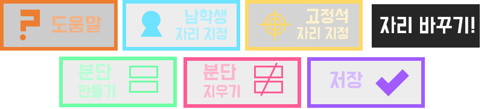
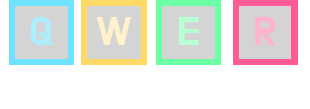

자리바꾸기 공장에 오신 것을 환영합니다!
자리바꾸기 공장은 다운로드 없이, 쉽고 간편하게 이용하실 수 있는 '자리 바꾸기' 웹사이트입니다.

자리바꾸기 공장은 다운로드 없이, 쉽고 간편하게 이용하실 수 있는 '자리 바꾸기' 웹사이트입니다.
자리바꾸기 공장은 도움말, 남학생 자리 지정, 고정석 자리 지정, 자리 바꾸기, 분단 만들기, 분단 지우기, 저장의 7가지 메뉴로 구성되어 있습니다. 자리를 구성할 때 이 메뉴들을 사용하시게 될 것입니다.
이 메뉴 중 남학생 자리 지정, 고정석 자리 지정, 분단 만들기, 분단 지우기 기능은 각각 Q, W, E, R의 단축키를 사용하여 더욱 간편하게 작업하실 수 있으니, 참고하시기 바랍니다!
자리바꾸기 공장을 이용하실 때 브라우저의 버전이 너무 낮을 경우 기능의 일부 또는 전체를 사용하지 못하실 수 있으니 주의하세요.
예를 들어, 인터넷 익스플로러의 경우 IE 9 버전 이상이어야 합니다. 인터넷 브라우저의 버전이 낮으면, 이 사이트를 비롯한 여러 사이트를 원활하게 이용할 수 없을 뿐만 아니라, 각종 바이러스에도 취약해 질 것입니다. 업데이트를 미루지 마세요.
이 메뉴 중 남학생 자리 지정, 고정석 자리 지정, 분단 만들기, 분단 지우기 기능은 각각 Q, W, E, R의 단축키를 사용하여 더욱 간편하게 작업하실 수 있으니, 참고하시기 바랍니다!
자리바꾸기 공장을 이용하실 때 브라우저의 버전이 너무 낮을 경우 기능의 일부 또는 전체를 사용하지 못하실 수 있으니 주의하세요.
예를 들어, 인터넷 익스플로러의 경우 IE 9 버전 이상이어야 합니다. 인터넷 브라우저의 버전이 낮으면, 이 사이트를 비롯한 여러 사이트를 원활하게 이용할 수 없을 뿐만 아니라, 각종 바이러스에도 취약해 질 것입니다. 업데이트를 미루지 마세요.
자, 본격적으로 시작해 볼까요?
자리바꾸기를 하기 위해 첫 번째로 분단을 만들어야 할 것입니다. 분단 만들기 버튼을 클릭해, 분단을 만들어 봅시다.
자리바꾸기 공장에서는 선생님의 교실의 분단의 크기를 반영할 수 있도록 크기를 지정하여 만들 수 있습니다.
크기를 지정할 때에는, [가로 길이, 세로 길이] 꼴로 지정해 주시면 되겠습니다.
예를 들어 가로가 2칸, 세로가 6칸인 분단을 만들고 싶으시다면, 2, 6을 입력하시면 됩니다.
분단의 크기는 선생님께서 자유롭게 정하실 수 있으나, 최대 크기가 30칸으로 정해져 있으니, 유의하여 주시기 바랍니다.
물론, 선생님의 교실에는 분단이 여러 개 있을 것이고, 그 크기도 각각 다를 것입니다.
분단 만들기 버튼을 계속 눌러, 나머지 분단도 만드시길 바랍니다.
실수로 분단을 잘못 만드셨을 경우에는 분단 지우기 버튼을 클릭해, 잘못 만든 분단을 지우실 수 있습니다.
분단을 지우실 때에는, [지울 분단의 번호] 만 입력해 주시면 되겠습니다.
예를 들어 3분단을 지우시고 싶으실 때에는, 3만 입력하시면 됩니다. 간단하죠?
분단의 번호의 기준은 현재 만들어져 있는 분단을 기준으로 하니 유의하세요. 1, 2, 3분단이 있는 상태에서 2분단을 지우셨을 경우, 기존에 3분단이던 분단은 두 번째 분단이 되므로 2분단으로 취급된다는 뜻입니다.

자리바꾸기를 하기 위해 첫 번째로 분단을 만들어야 할 것입니다. 분단 만들기 버튼을 클릭해, 분단을 만들어 봅시다.
자리바꾸기 공장에서는 선생님의 교실의 분단의 크기를 반영할 수 있도록 크기를 지정하여 만들 수 있습니다.
크기를 지정할 때에는, [가로 길이, 세로 길이] 꼴로 지정해 주시면 되겠습니다.
예를 들어 가로가 2칸, 세로가 6칸인 분단을 만들고 싶으시다면, 2, 6을 입력하시면 됩니다.
분단의 크기는 선생님께서 자유롭게 정하실 수 있으나, 최대 크기가 30칸으로 정해져 있으니, 유의하여 주시기 바랍니다.
물론, 선생님의 교실에는 분단이 여러 개 있을 것이고, 그 크기도 각각 다를 것입니다.
분단 만들기 버튼을 계속 눌러, 나머지 분단도 만드시길 바랍니다.
실수로 분단을 잘못 만드셨을 경우에는 분단 지우기 버튼을 클릭해, 잘못 만든 분단을 지우실 수 있습니다.
분단을 지우실 때에는, [지울 분단의 번호] 만 입력해 주시면 되겠습니다.
예를 들어 3분단을 지우시고 싶으실 때에는, 3만 입력하시면 됩니다. 간단하죠?
분단의 번호의 기준은 현재 만들어져 있는 분단을 기준으로 하니 유의하세요. 1, 2, 3분단이 있는 상태에서 2분단을 지우셨을 경우, 기존에 3분단이던 분단은 두 번째 분단이 되므로 2분단으로 취급된다는 뜻입니다.
분단을 모두 만드셨다면, 이제 자리를 클릭하여 이름을 적어봅시다.
자리를 입력하실 때에는 한글, 영어, 숫자, 특수문자에 상관없이 입력하실 수 있지만, ¿와 ¡(느낌표가 거꾸로 된 기호)는 입력하실 수 없습니다. 이 두 문자는 데이터를 처리하기 위해 사용되는 문자라서 그렇습니다.
만약 분단에 빈 자리가 있거나, 분단이 모둠 형태라서 가로로 분단이 쪼개져 있다면, 빈 부분의 자리는 입력하지 않으시면 되겠습니다. 입력되지 않은 자리는 자리를 바꿀 때 바뀌는 자리에서 제외될 것입니다. 만약 빈 자리도 다른 학생들의 자리와 같이 섞이게 하고 싶으시다면, 공백[Space Bar]을 입력해 주세요!

자리를 입력하실 때에는 한글, 영어, 숫자, 특수문자에 상관없이 입력하실 수 있지만, ¿와 ¡(느낌표가 거꾸로 된 기호)는 입력하실 수 없습니다. 이 두 문자는 데이터를 처리하기 위해 사용되는 문자라서 그렇습니다.
만약 분단에 빈 자리가 있거나, 분단이 모둠 형태라서 가로로 분단이 쪼개져 있다면, 빈 부분의 자리는 입력하지 않으시면 되겠습니다. 입력되지 않은 자리는 자리를 바꿀 때 바뀌는 자리에서 제외될 것입니다. 만약 빈 자리도 다른 학생들의 자리와 같이 섞이게 하고 싶으시다면, 공백[Space Bar]을 입력해 주세요!
몇몇 선생님께서는 자리를 바꿀 때, 남학생과 여학생을 구분해서 자리를 바꾸거나, 특정 자리를 고정하여 자리가 바뀌지 않도록 고정시키고 싶으실 것입니다. 남학생 자리 지정, 고정석 자리 지정 메뉴를 사용할 때입니다.
남학생 자리 지정 버튼을 클릭하시면, 버튼이 빛나면서 남학생 자리 지정 모드가 활성화됩니다. 이 상태에서 원하는 자리를 클릭하셔서 남학생 자리로 지정하실 수 있습니다. 남학생 자리로 지정된 자리는 하늘색으로 바뀝니다. 남학생 자리로 지정된 자리를 다시 클릭하시면 원래대로 돌아옵니다. 남학생 자리를 모두 지정하셨다면, 다시 버튼을 클릭해 주세요. 남학생 자리 지정 모드가 비활성화됩니다.
이후 자리를 바꿀 때 남학생으로 지정된 자리가 있을 경우, 남학생 자리끼리 따로 자리가 섞이게 될 것입니다.
고정석 자리 지정 버튼 역시 같은 원리로 동작합니다. 고정석으로 지정된 자리는 노란색으로 바뀌며, 이후 자리를 바꿀 때 자리가 바뀌지 않고 고정됩니다.
남학생 자리 지정 버튼을 클릭하시면, 버튼이 빛나면서 남학생 자리 지정 모드가 활성화됩니다. 이 상태에서 원하는 자리를 클릭하셔서 남학생 자리로 지정하실 수 있습니다. 남학생 자리로 지정된 자리는 하늘색으로 바뀝니다. 남학생 자리로 지정된 자리를 다시 클릭하시면 원래대로 돌아옵니다. 남학생 자리를 모두 지정하셨다면, 다시 버튼을 클릭해 주세요. 남학생 자리 지정 모드가 비활성화됩니다.
이후 자리를 바꿀 때 남학생으로 지정된 자리가 있을 경우, 남학생 자리끼리 따로 자리가 섞이게 될 것입니다.
고정석 자리 지정 버튼 역시 같은 원리로 동작합니다. 고정석으로 지정된 자리는 노란색으로 바뀌며, 이후 자리를 바꿀 때 자리가 바뀌지 않고 고정됩니다.
모든 학생들의 자리를 입력하시고, 자리 지정도 완료하셨다면, 이제 자리를 바꿀 시간입니다! 우선 현재의 자리를 저장하고 싶으시다면 저장을 먼저 진행해 주세요. 아래의 글을 참고하세요. 준비가 되셨다면, 자리 바꾸기 버튼을 클릭해 자리를 바꾸세요!
자리를 바꿀 때, 아무 이름도 입력되지 않은 빈 자리가 있을 경우, 자리가 섞일 때 관여하지 않게 됩니다. 빈 자리는 평소보다 어둡게 표시됩니다. 따라서, 위에서 이미 설명드렸지만, 빈 자리도 다른 학생의 자리와 함께 섞이도록 하고 싶으시다면 공백[Space Bar]을 입력해 주셔야 합니다.
또한 자리를 바꿀 때 남학생 자리가 한 자리라도 설정되어 있다면, 고정석을 제외한 나머지 자리가 전부 여학생 자리임을 의미하는 분홍색 자리로 바뀌게 됩니다. 이후 자리가 바뀔 때 남학생은 남학생끼리, 여학생은 여학생끼리 자리가 바뀌게 됩니다.
자리를 바꿀 때, 아무 이름도 입력되지 않은 빈 자리가 있을 경우, 자리가 섞일 때 관여하지 않게 됩니다. 빈 자리는 평소보다 어둡게 표시됩니다. 따라서, 위에서 이미 설명드렸지만, 빈 자리도 다른 학생의 자리와 함께 섞이도록 하고 싶으시다면 공백[Space Bar]을 입력해 주셔야 합니다.
또한 자리를 바꿀 때 남학생 자리가 한 자리라도 설정되어 있다면, 고정석을 제외한 나머지 자리가 전부 여학생 자리임을 의미하는 분홍색 자리로 바뀌게 됩니다. 이후 자리가 바뀔 때 남학생은 남학생끼리, 여학생은 여학생끼리 자리가 바뀌게 됩니다.
자리바꾸기 공장에서 작성한 자리의 변경 사항을 저장하고 싶으시다면, 저장 메뉴를 이용하시면 됩니다. 버튼을 클릭해, 지금까지 작성한 자리를 웹사이트의 쿠키에 저장하실 수 있습니다. 이후 다시 자리를 바꾸러 자리바꾸기 공장에 오실 때, 저장된 내용을 자동으로 불러와 드립니다. 자리바꾸기 공장은 언제까지나 프로그램의 다운로드 없이 사이트에서 모든 것을 해결하실 수 있도록 하는 것이 목적이므로, 저장은 사이트에서 할 수 있도록 구현하였습니다.
필독 : 저장을 하실 때, 자리바꾸기 공장은 쿠키를 선생님 PC의 저장공간에 추가하게 되며, 이후 선생님께서 다시 방문하실 경우, 사이트는 쿠키에 있는 학생들의 이름이 저장된 정보를 읽어 불러오게 됨을 알려드립니다. 학생 정보는 오로지 저장된 사항을 불러오는 데에만 사용될 것입니다. 선생님께서 이 사이트에서 저장 기능을 사용하실 경우, 이 글을 숙지하셨으며, 동의하는 것으로 간주합니다. 도움말을 읽지 않으셨더라도 사이트에서는 처음 저장 시 쿠키에 대한 경고문과 함께 도움말을 읽을 것을 권하는 안내 메시지가 보여지니, 참고하시기 바랍니다. 쿠키를 제거하고 싶으시다면, 이 게시글을 참고하시기 바랍니다.
필독 : 저장을 하실 때, 자리바꾸기 공장은 쿠키를 선생님 PC의 저장공간에 추가하게 되며, 이후 선생님께서 다시 방문하실 경우, 사이트는 쿠키에 있는 학생들의 이름이 저장된 정보를 읽어 불러오게 됨을 알려드립니다. 학생 정보는 오로지 저장된 사항을 불러오는 데에만 사용될 것입니다. 선생님께서 이 사이트에서 저장 기능을 사용하실 경우, 이 글을 숙지하셨으며, 동의하는 것으로 간주합니다. 도움말을 읽지 않으셨더라도 사이트에서는 처음 저장 시 쿠키에 대한 경고문과 함께 도움말을 읽을 것을 권하는 안내 메시지가 보여지니, 참고하시기 바랍니다. 쿠키를 제거하고 싶으시다면, 이 게시글을 참고하시기 바랍니다.
자리바꾸기 공장은 HTML을 입문한 저의 첫 프로젝트입니다. 개선이 필요한 부분, 부족한 부분이 많을 것입니다.
사이트의 이용 소감, 개선이 필요한 부분 등에 대해서는, 댓글로 도와주시면 감사하겠습니다.
이 사이트의 소스코드는 여기에 공개되어 있으며, MIT 라이센스를 따릅니다.
'자리바꾸기 공장'을 이용해 주셔서 감사합니다.
- 만든 놈 : 폴라리스(polariswiz) -
사이트의 이용 소감, 개선이 필요한 부분 등에 대해서는, 댓글로 도와주시면 감사하겠습니다.
이 사이트의 소스코드는 여기에 공개되어 있으며, MIT 라이센스를 따릅니다.
'자리바꾸기 공장'을 이용해 주셔서 감사합니다.
- 만든 놈 : 폴라리스(polariswiz) -